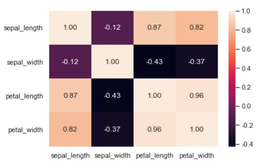
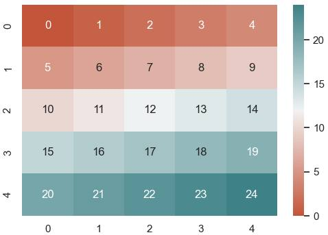

第 1 页 · 四、heatmap热力图
四、heatmap热力图
iris = sns.load_dataset('iris', data_home='./seaborndata')
arr = iris.select_dtypes('float').corr() # 选择数值列计算相关系数矩阵
sns.heatmap(arr, annot=True, fmt=".2f") # 热力图，annot=True显示数值，fmt保留2位小数
热力图heatmap()用于将矩阵的数据值映射为深浅不同的颜色，便于快速观察矩阵中数据的相对大小。例如，下面的代码将鸢尾花数据集四个数值列的相关系数矩阵以热力图形式展示出来。

热力图将数值用不同深浅颜色的色块表示出来。图中的颜色条是浅色对应较大值，深色对应较小值，对角线上相关系数为1，颜色最浅，然后petal_length和petal_width列的相关系数0.96较高，颜色也较浅，有一些相关系数为负，颜色最深。
第 2 页 · 四、heatmap热力图
四、heatmap热力图
plt.figure(figsize = (6, 4))
x = np.arange(25).reshape(5, 5) # 二维数组
gmap = sns.diverging_palette(20, 200, as_cmap=True) # 创建发散型颜色映射cmap
sns.heatmap(x, cmap=gmap, annot=True) # 绘制热力图
下面的代码是用自定义的发散型cmap调色板来映射热力图。
